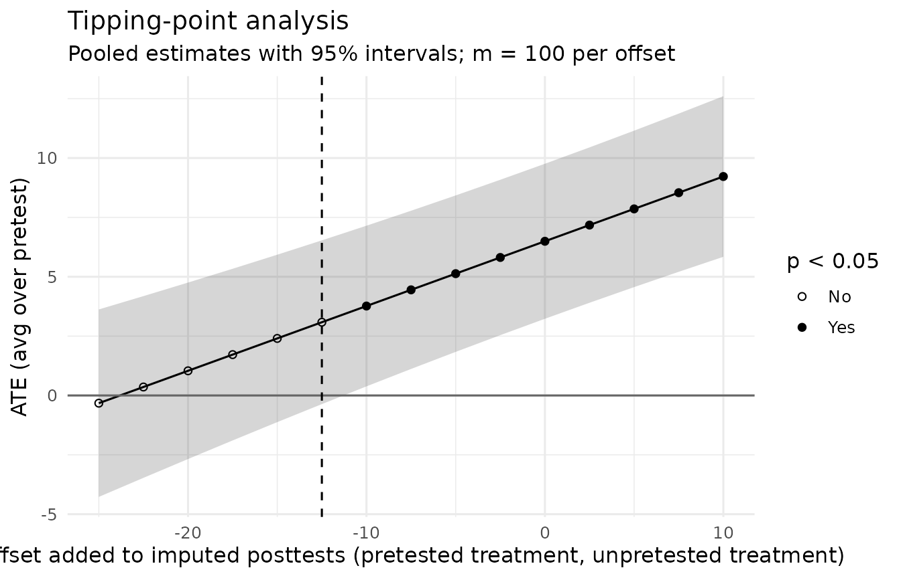

Missing and Repeated Posttests
Source:vignettes/articles/missing-and-repeated.Rmd
missing-and-repeated.RmdTwo situations call for more than one model fitted to complete data:
- Some posttests are missing. The main analysis rests on an assumption about why they are missing, and a sensitivity analysis asks how far that assumption could be wrong before the conclusion changes (White et al., 2011).
- The posttest is measured on several occasions, and some participants drop out along the way. A model for all occasions at once uses every observed score and stays valid when dropout depends on earlier scores (Fitzmaurice et al., 2011).
Both are shown here on simulated data whose true effects are known. The methods are validated in the articles Missing Posttests: Validating the Sensitivity Analysis and Longitudinal Designs: Validating the Repeated-Measures Analysis.
Missing posttests
The data
A study with 50 participants per group, a treatment effect of 5 points, no sensitization, and a pretest-posttest correlation of 0.6. In the pretested groups, participants with lower pretests are more likely to miss the posttest; in the unpretested groups, one in five posttests is missing at random.
d <- simulate_solomon(n = 50, delta = 5, sens = 0, pretest_effect = 2, rho = 0.6,
sigma = 10, mean = 50, digits = 0, seed = 2082)
set.seed(2083)
p_missing <- ifelse(d$pretested == 1, stats::plogis(-1.4 - 0.08 * (d$y_pre - 50)), 0.2)
d$y_post[stats::runif(nrow(d)) < p_missing] <- NA
check_solomon_missing(y_post, treat, pretested, y_pre, data = d)
#> Solomon missingness check
#> Pattern: structural pretest absence and incidental missingness
#>
#> Group Cell n Post missing Pre absent (design) Pre missing
#> 1 Pretested, treatment 50 13 0 0
#> 2 Pretested, control 50 11 0 0
#> 3 Unpretested, treatment 50 14 50 0
#> 4 Unpretested, control 50 10 50 0
#> Pre unexpected
#> 0
#> 0
#> 0
#> 0
#>
#> Structural pretest absence (n = 100)
#> Participants assigned to the unpretested groups were never pretested; the
#> absence of a pretest is the experimental manipulation.
#> Response: Do not impute. Use analyses that respect the design, such as
#> fit_solomon_glm(), fit_solomon_ml(), fit_solomon_classic(), or SEM.
#> Unlike planned missing-data designs, where unmeasured values exist and
#> can be imputed, an imputed pretest here would describe a measurement that
#> never occurred.
#> Sources: Solomon (1949); Graham et al. (2006)
#>
#> Incidental posttest missingness (n = 48)
#> Posttest scores are missing, so these participants are excluded from
#> complete-case analyses.
#> Response: Complete-case analysis is unbiased when missingness is unrelated
#> to the outcome given the variables in the model. Report missingness by
#> cell, because attrition that differs across the four groups can undermine
#> the randomized comparisons, and consider sensitivity analyses if
#> missingness may depend on the unobserved outcome.
#> Sources: Rubin (1976); Little & Rubin (2019)The main analysis
Here the posttests are missing at random given group and, in the pretested groups, the pretest: whether a posttest is missing depends only on things the model includes. The model fitted to the observed posttests is then a valid main analysis:
fit <- fit_solomon_glm(y_post, treat, pretested, y_pre, data = d)
fit$effects[, c("contrast", "estimate", "std.error", "conf.low", "conf.high", "p.value")]
#> contrast estimate std.error conf.low conf.high
#> 1 ATE (avg over pretest) 6.484859 1.590595 3.34147119 9.628247
#> 2 Pretest x Treatment 2.875273 3.181191 -3.41150206 9.162049
#> 3 Treatment | pretested 7.922496 1.933656 4.10113932 11.743852
#> 4 Treatment | unpretested 5.047222 2.526054 0.05515037 10.039294
#> 5 Pretest effect | control 1.520627 2.237660 -2.90151081 5.942765
#> 6 Pretest effect | treated 4.395900 2.464161 -0.47385730 9.265658
#> 7 Pretest main effect 2.958264 1.734824 -0.47015219 6.386680
#> p.value
#> 1 7.443972e-05
#> 2 3.675614e-01
#> 3 6.885790e-05
#> 4 4.755416e-02
#> 5 4.978509e-01
#> 6 7.649746e-02
#> 7 9.026482e-02Multiple imputation under the same assumption agrees with it, as it should (Carpenter et al., 2023, p. 256):
mar <- fit_solomon_mi(y_post, treat, pretested, y_pre, seed = 1, data = d)
mar$effects[, c("contrast", "estimate", "std.error", "fmi")]
#> contrast estimate std.error fmi
#> 1 ATE (avg over pretest) 6.494264 1.649496 0.2907155
#> 2 Pretest x Treatment 3.082780 3.299247 0.2908277
#> 3 Treatment | pretested 8.035654 2.010851 0.2789115
#> 4 Treatment | unpretested 4.952874 2.615466 0.2977825The fmi column is the fraction of missing information
for each contrast.
How far could the assumption be wrong?
Missing at random cannot be checked from the data. The sensitivity
analysis asks: if the missing posttests were systematically lower (or
higher) than the observed ones predict, by how much would they have to
differ to change the conclusion? fit_solomon_mi() answers
for one set of offsets, and tipping_point_solomon() for a
range of them. By default the range is one standard deviation either
way; here the treatment effect is large enough that its conclusion holds
throughout that range, so the range is widened to show where it would
change. The offsets are applied to the treatment groups, the departure
that bears on the treatment effect:
tp <- tipping_point_solomon(y_post, treat, pretested, y_pre, groups = "treatment",
deltas = seq(-25, 10, by = 2.5), seed = 1, data = d)
tp$tipping
#> negative positive
#> -12.5 NA
tp$tipping_sd
#> negative positive
#> -1.19644 NA
plot_tipping_point(tp)
tp$tipping gives the smallest offsets, in points, at
which the conclusion about the average treatment effect changes, and
tp$tipping_sd gives them in standard deviations of the
observed posttests (NA means the conclusion did not change
within the range tried). Here the effect would lose its statistical
significance only if the missing treatment-group posttests were about
1.2 standard deviations lower than the imputation model predicts.
Whether such an offset is plausible is a substantive judgment. White et
al. (2011) advise specifying sensitivity analyses in detail before the
unblinded data are seen, and analysis_plan_solomon()
includes this analysis in the plan.
Sensitization and the pretested groups
A departure from missing at random that differs between the pretested
and unpretested groups bears on the sensitization contrast. In the
validation study, a departure confined to the pretested treatment group
biased the analyses that assume missing at random by 0.10 to 0.16
standard deviations. groups = 1 shifts that group
alone:
tp_sens <- tipping_point_solomon(y_post, treat, pretested, y_pre,
contrast = "Pretest x Treatment", groups = 1,
deltas = seq(-30, 30, by = 2.5), seed = 1, data = d)
tp_sens$tipping_sd
#> negative positive
#> NA 1.435728Here a significant Pretest x Treatment contrast would appear only if the missing posttests of the pretested treatment group were about 1.4 standard deviations higher than predicted.
Reporting
report_solomon() writes the method, the offsets
explored, and the tipping points, with their references:
report_solomon(tp)
#> The design was a Solomon four-group design (Solomon, 1949), with 50, 50, 50,
#> and 50 participants analyzed in the pretested treatment, pretested control,
#> unpretested treatment, and unpretested control groups, respectively.
#>
#> Missing posttests (48 of 200, 24.0%) were multiply imputed (m = 100) with a
#> normal linear regression fitted separately in each Solomon group, on the
#> pretest in the pretested groups (Carpenter et al., 2023). Each completed data
#> set was analyzed with a linear model containing treatment, pretesting, and
#> their interaction, adjusting for the pretest score among pretested
#> participants (Lin, 2013; Newman et al., 1990), with HC3
#> heteroskedasticity-consistent standard errors, and the estimates were
#> combined with Rubin's rules, using the small-sample degrees of freedom of
#> Barnard and Rubin (1999, as cited in van Buuren, 2018). In a tipping-point
#> sensitivity analysis (White et al., 2011; Little et al., 2012), the imputed
#> posttests of the pretested treatment and unpretested treatment groups were
#> shifted by offsets from -25.00 to 10.00 (-2.39 to 0.96 pooled within-group
#> standard deviations of the observed posttests).
#>
#> Assuming the posttests were missing at random, the average treatment effect
#> across pretest conditions was 6.49, 95% CI [3.23, 9.76], p < .001.
#> Its statistical significance at alpha = .05 changed at an offset of -12.50
#> (-1.20 SD), where the estimate was 3.08, p = .079.
#> Its statistical significance at alpha = .05 did not change for any positive
#> offset tried.
#>
#> References
#>
#> Carpenter, J. R., Bartlett, J. W., Morris, T. P., Wood, A. M., Quartagno, M.,
#> & Kenward, M. G. (2023). Multiple imputation and its application (2nd
#> ed.). Wiley. https://doi.org/10.1002/9781119756118
#>
#> Lin, W. (2013). Agnostic notes on regression adjustments to experimental
#> data: Reexamining Freedman's critique. The Annals of Applied Statistics,
#> 7(1), 295–318. https://doi.org/10.1214/12-AOAS583
#>
#> Little, R. J., D'Agostino, R., Cohen, M. L., Dickersin, K., Emerson, S. S.,
#> Farrar, J. T., Frangakis, C., Hogan, J. W., Molenberghs, G., Murphy, S.
#> A., Neaton, J. D., Rotnitzky, A., Scharfstein, D., Shih, W. J., Siegel,
#> J. P., & Stern, H. (2012). The prevention and treatment of missing data
#> in clinical trials. The New England Journal of Medicine, 367(14),
#> 1355–1360. https://doi.org/10.1056/NEJMsr1203730
#>
#> Long, J. S., & Ervin, L. H. (2000). Using heteroscedasticity consistent
#> standard errors in the linear regression model. The American
#> Statistician, 54(3), 217–224.
#> https://doi.org/10.1080/00031305.2000.10474549
#>
#> MacKinnon, J. G., & White, H. (1985). Some heteroskedasticity-consistent
#> covariance matrix estimators with improved finite sample properties.
#> Journal of Econometrics, 29(3), 305–325.
#> https://doi.org/10.1016/0304-4076(85)90158-7
#>
#> Newman, I., Benz, C., & Williams, J. D. (1990). Alternatives in analyzing the
#> Solomon four group design. Multiple Linear Regression Viewpoints, 17(2),
#> 91–103. https://ojs.lib.ua.edu/glmj/article/view/125
#>
#> Solomon, R. L. (1949). An extension of control group design. Psychological
#> Bulletin, 46(2), 137–150. https://doi.org/10.1037/h0062958
#>
#> van Buuren, S. (2018). Flexible imputation of missing data (2nd ed.). CRC
#> Press. https://doi.org/10.1201/9780429492259
#>
#> White, I. R., Horton, N. J., Carpenter, J., & Pocock, S. J. (2011). Strategy
#> for intention to treat analysis in randomised trials with missing outcome
#> data. BMJ, 342, Article d40. https://doi.org/10.1136/bmj.d40Repeated posttests
The data
The same design with posttests right after the treatment, at 6 months, and at 12 months. The treatment effect fades from 5 to 3 points. After each posttest, participants with lower scores are more likely to drop out, so the later posttests are missing at random given the earlier ones.
set.seed(57)
n <- 60
g <- rep(1:4, each = n)
treat <- as.integer(g %in% c(1, 3))
pretested <- as.integer(g <= 2)
sds <- c(10, 10, 12, 14) # the baseline, then the three posttests
cov <- diag(sds) %*% outer(0:3, 0:3, function(i, j) 0.6^abs(i - j)) %*% diag(sds)
z <- MASS::mvrnorm(4 * n, rep(0, 4), cov)
y <- sapply(1:3, function(t) 50 + 2 * pretested + c(5, 4, 3)[t] * treat) + z[, 2:4]
last <- rep(3L, 4 * n)
for (t in 1:2) {
drop <- last == 3L & stats::runif(4 * n) < stats::plogis(-2 - 0.07 * (y[, t] - 50))
last[drop] <- t
}
for (t in 2:3) y[last < t, t] <- NA
occasions <- c("post", "6 months", "12 months")
long <- data.frame(
id = rep(seq_len(4 * n), 3),
occasion = factor(rep(occasions, each = 4 * n), levels = occasions),
y_post = as.vector(y),
treat = rep(treat, 3),
pretested = rep(pretested, 3),
y_pre = rep(ifelse(pretested == 1, 50 + z[, 1], NA), 3)
)
head(long)
#> id occasion y_post treat pretested y_pre
#> 1 1 post 67.35471 1 1 49.80035
#> 2 2 post 77.51925 1 1 63.16314
#> 3 3 post 45.74838 1 1 46.10723
#> 4 4 post 47.76910 1 1 36.86474
#> 5 5 post 61.85972 1 1 53.77617
#> 6 6 post 53.82735 1 1 38.80677The data are in long format: one row per participant and occasion, with the participant’s identifier.
The model
fit_solomon_mmrm() fits a mixed model for repeated
measures (Mallinckrodt et al., 2008) and reports the four Solomon
contrasts and the pretest effects at each occasion, and the change in
sensitization from the first occasion to the last:
mm <- fit_solomon_mmrm(y_post, treat, pretested, id, occasion, y_pre, data = long)
mm
#> Solomon MMRM: mixed model for repeated measures (Mallinckrodt et al., 2008)
#> Occasions: post, 6 months, 12 months
#> Covariance: unstructured, separately for pretested and unpretested participants (REML)
#> Degrees of freedom: Kenward-Roger
#> Pretest centered at the pretested participants' mean: 49.945
#> Pretest effects: standard errors include the sampling variance of that mean.
#>
#> Observed posttests by group and occasion:
#> post 6 months 12 months
#> pretested treatment 60 53 46
#> pretested control 60 55 49
#> unpretested treatment 60 54 48
#> unpretested control 60 51 44
#>
#> Occasion Contrast Estimate SE df t
#> post ATE (avg over pretest) 5.056 1.161 222.9 4.35
#> post Pretest x Treatment -2.072 2.322 222.9 -0.89
#> post Treatment | pretested 4.020 1.434 117.0 2.80
#> post Treatment | unpretested 6.091 1.826 118.0 3.34
#> post Pretest effect | control 2.862 1.727 267.1 1.66
#> post Pretest effect | treated 0.790 1.727 267.1 0.46
#> post Pretest main effect 1.826 1.278 302.1 1.43
#> 6 months ATE (avg over pretest) 3.137 1.701 215.3 1.84
#> 6 months Pretest x Treatment -4.237 3.401 215.3 -1.25
#> 6 months Treatment | pretested 1.018 2.377 104.6 0.43
#> 6 months Treatment | unpretested 5.255 2.433 110.8 2.16
#> 6 months Pretest effect | control 4.638 2.461 235.1 1.88
#> 6 months Pretest effect | treated 0.401 2.459 234.0 0.16
#> 6 months Pretest main effect 2.520 1.778 252.8 1.42
#> 12 months ATE (avg over pretest) 1.869 2.055 180.8 0.91
#> 12 months Pretest x Treatment -0.602 4.109 180.8 -0.15
#> 12 months Treatment | pretested 1.568 2.531 86.9 0.62
#> 12 months Treatment | unpretested 2.170 3.237 99.4 0.67
#> 12 months Pretest effect | control 2.607 2.954 188.6 0.88
#> 12 months Pretest effect | treated 2.005 2.932 190.5 0.68
#> 12 months Pretest main effect 2.306 2.107 198.5 1.09
#> 12 months vs post Change in Pretest x Treatment 1.470 3.997 184.0 0.37
#> p 95% CI
#> <.001 [ 2.767, 7.344]
#> 0.373 [ -6.648, 2.504]
#> 0.006 [ 1.179, 6.860]
#> 0.001 [ 2.475, 9.708]
#> 0.099 [ -0.538, 6.262]
#> 0.648 [ -2.610, 4.190]
#> 0.154 [ -0.690, 4.341]
#> 0.066 [ -0.215, 6.489]
#> 0.214 [-10.941, 2.467]
#> 0.669 [ -3.694, 5.731]
#> 0.033 [ 0.434, 10.076]
#> 0.061 [ -0.210, 9.486]
#> 0.871 [ -4.444, 5.247]
#> 0.158 [ -0.982, 6.021]
#> 0.364 [ -2.185, 5.923]
#> 0.884 [ -8.710, 7.506]
#> 0.537 [ -3.464, 6.599]
#> 0.504 [ -4.252, 8.592]
#> 0.379 [ -3.221, 8.434]
#> 0.495 [ -3.778, 7.788]
#> 0.275 [ -1.850, 6.461]
#> 0.714 [ -6.416, 9.356]The model needs the mmrm package. It estimates the covariance of the posttests separately for pretested and unpretested participants, because the pretest adjustment makes their residual covariance differ, and it uses Kenward-Roger degrees of freedom. The table of observed posttests shows the dropout.
Why not analyze each occasion separately?
An analysis of the participants still observed at 12 months uses only them, and it is valid only if dropout is unrelated to the outcome. Here dropout followed low scores:
late <- long[long$occasion == "12 months" & !is.na(long$y_post), ]
cc <- fit_solomon_glm(y_post, treat, pretested, y_pre, data = late)
# The four treatment contrasts, selected from each effects table by label.
labels <- c("ATE (avg over pretest)", "Pretest x Treatment",
"Treatment | pretested", "Treatment | unpretested")
pick <- function(effects) effects$estimate[match(labels, effects$contrast)]
data.frame(
contrast = labels,
complete_case = round(pick(cc$effects), 2),
mmrm = round(pick(mm$effects[mm$effects$occasion == "12 months", ]), 2),
truth = c(3, 0, 3, 3)
)
#> contrast complete_case mmrm truth
#> 1 ATE (avg over pretest) 2.92 1.87 3
#> 2 Pretest x Treatment -0.67 -0.60 0
#> 3 Treatment | pretested 2.59 1.57 3
#> 4 Treatment | unpretested 3.26 2.17 3In this data set the two analyses differ by about a point at 12 months, well within their standard errors of about 2 points, and here the complete-case estimate happens to land closer to the truth. In a single data set that is a matter of chance. The difference is systematic only on average: across 2,000 data sets per scenario in the validation study, per-occasion complete-case analyses were biased by up to 0.09 standard deviations at the last occasion under heavy dropout, while the repeated-measures model was not.
Planning and reporting
analysis_plan_solomon(occasions = ...) writes a plan
with this model as the primary analysis and the contrasts at the primary
occasion as confirmatory, and report_solomon() reports the
fit:
report_solomon(mm, digits = 1)$method
#> [1] "Posttest outcomes at 3 occasions were analyzed with a mixed model for repeated measures (Mallinckrodt et al., 2008) containing occasion, treatment, pretesting, and all their interactions, adjusting for the pretest score among pretested participants separately at each occasion (Lin, 2013; Newman et al., 1990), with an unstructured within-participant covariance estimated separately for pretested and unpretested participants by restricted maximum likelihood (Laird & Ware, 1982). Tests used Kenward-Roger degrees of freedom (Kenward & Roger, 1997, as cited in Fitzmaurice et al., 2011). The model was fitted with the mmrm package (Sabanes Bove et al., 2026) and assumes that missing posttests are missing at random."For a published study with three posttest occasions, reproduced from its group statistics, see Worked Example: Repeated Posttests.
References
Carpenter, J. R., Bartlett, J. W., Morris, T. P., Wood, A. M., Quartagno, M., & Kenward, M. G. (2023). Multiple imputation and its application (2nd ed.). Wiley. https://doi.org/10.1002/9781119756118
Fitzmaurice, G. M., Laird, N. M., & Ware, J. H. (2011). Applied longitudinal analysis (2nd ed.). Wiley. https://doi.org/10.1002/9781119513469
Mallinckrodt, C. H., Lane, P. W., Schnell, D., Peng, Y., & Mancuso, J. P. (2008). Recommendations for the primary analysis of continuous endpoints in longitudinal clinical trials. Drug Information Journal, 42(4), 303–319. https://doi.org/10.1177/009286150804200402
White, I. R., Horton, N. J., Carpenter, J., & Pocock, S. J. (2011). Strategy for intention to treat analysis in randomised trials with missing outcome data. BMJ, 342, Article d40. https://doi.org/10.1136/bmj.d40